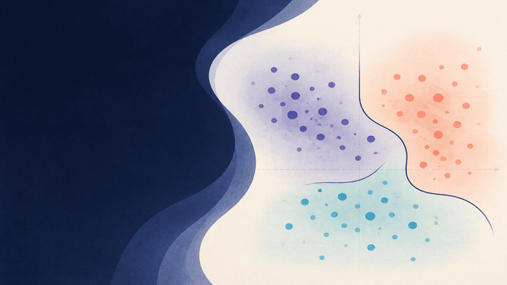
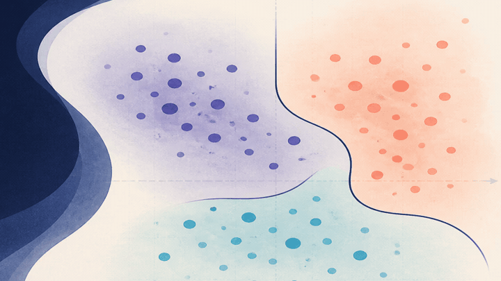
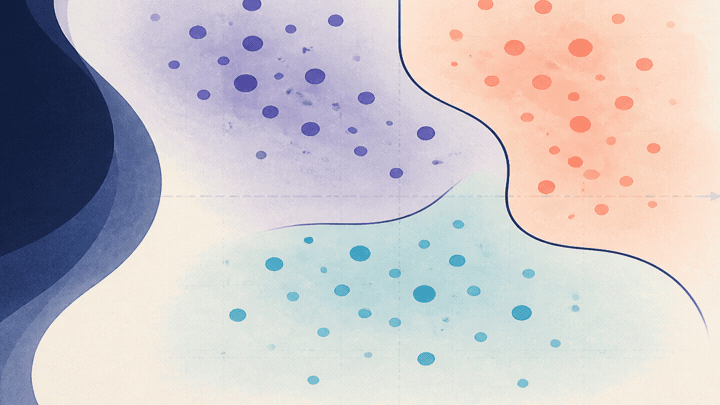

Probabilities stay visible
Classifiers return probabilities. Choosing a label is a separate step, with a threshold you can set.
statistical learning / typed Flow
flow-scikit provides classifiers, regressors, preprocessing, metrics, and validation tools. Outputs and thresholds stay explicit in the API.
library behaviour
Classifiers return probabilities. Choosing a label is a separate step, with a threshold you can set.
A unified table interface keeps data handling consistent, even when the input comes from a different dataframe tool.
Grid search reports progress through an effect. You can use the built-in console view, silence it, or provide your own.
visual examples
The interactive demos show what changes when the input changes. Source examples show the corresponding Flow code.

Get a probability first. Choose a label only when your application needs one.

KMeans, DBSCAN, and MeanShift help when your data has no labels yet.

Use splits, folds, and parameter search to compare a few sensible options.
a small starting point
Start with a matrix, fit a model, inspect confidence, then decide on labels. It is a simple sequence, but it keeps important policy out in the open.
import "lib/scikit/scikit.flow"
let model = knn_classifier_fit(X_train, y_train, 5)
let confidence = knn_classifier_predict(model, X_test)
let labels = knn_classifier_decide(model, X_test, 0.65)open source